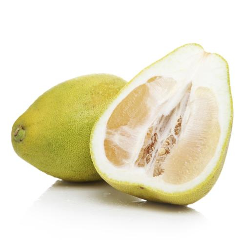

火龍果

採收季節:
火龍果最主要的採收期為9~11月。
產地:
火龍果是以彰化、台南為主要的產地。
營養價值:
火龍果含有一般水果少有的植物性蛋白和花青素、豐富的維生素和水溶性食物纖維，搭配牛乃一起食用，具有美膚與解毒的功效。
其花青素和水溶性繕食纖維，對預防便祕、降低血糖、血脂等。
火龍果果中的白蛋白對重金屬中毒有解毒的功效，能保護胃壁；而花青素具有抗氧化、抗自由基、抗衰老的作用，能高對腦細胞變性的預防，抑制癡呆的發生。
柚子

採收季節:
柚子最主要的採收期為9~11月。
產地:
生產最多柚子的是花蓮縣。
營養價值:
柚子的維生素C的含量為檸檬的3倍、蘋果的8倍，表皮更含有珍貴的精油成分，是一般柑桔類的4倍，還含有天然果膠和高纖維，有助於養顏美容、傷口癒合；柚子中還有柚皮甙，可以降低血液的黏滯度，防止血栓及中風。
在新鮮的柚子中也含有類胰島素成分，能降血糖，為糖尿病、肥胖症患者的理想食物；柚子中的枸櫞酸，則具有消除人體疲勞的作用。
柚子的纖維不易消化，吃太多會造成腹部脹氣、腸胃蠕動過快，因此腸胃功能欠佳者應少食。
柚子也會妨礙避孕藥的吸收；另外，服用抗過敏藥的患者食用柚子，則可能會導致頭昏、心悸、心律失常的問題。
柿子

採收季節:
柿子最主要的採收期為9~12月。
產地:
柿子栽培面積最廣的地區是在嘉義縣。
營養價值:
柿子含碘，對缺碘引起的甲狀腺腫大患者有益；類胡蘿蔔素有助於對抗自由基。
柿子含水溶性纖維「果膠」，具有保水功能，可以提高血液中膽固醇的清除率，可以預防心血管疾病，血膽固醇高的人，可以適量食用柿子。
柿子含有單寧酸，如果空腹吃下柿子，容易與胃酸凝結成塊，形成柿石對健康不利；且單寧酸易與鐵結合，會妨礙人體對鐵質的吸收，缺鐵性貧血患者應少吃；另外，柿子性寒，產後、外感風寒等病症和貧血患者也不宜食用。